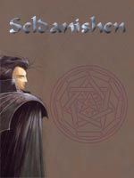

Joué par :
Pileouface Joué par :
[ Information masquée ] Age : 270
Lieu de naisance : Astranaar
Signe de naissance : Chouette
Sexe : Homme
Race : Elfe
Faction : Alliance
Formation : Druide
Niveau : 20
Guilde : Orphelins de Hyjal (Les) Artisanat 1 : Herboriste
Artisanat 2 : Alchimiste
Informations hrp : Bonjour a tousje suis le grand frere des orphelins de hyjal et donc cogerant aux coté de ancalhimé de la guilde, pour toute vos questions sur la guilde vous pouvez me contacter moi ou pileouface
Description : Seldanishen Windwhispers
Seldanishen a servi pendant les trois guerres, au meme titre que nombres de ses compatriotes, sous les ordres du druide fandral. Durant la troisieme guerre, à la bataille du mont Hyjal, lui et ses hommes ont été envoyés en mission pour les druides mais du fait de differents entre certains druides au commandement ( les tensions entre les druides du cercle de cenarius et ceux qui dirigent darnassus ont toujours existé) leur mission a été un echec et de nombreux braves perirent pour rien. Ne voulant pas endosser la responsabilité de cet echec Fandral pretexta une trahison de Seldanishen et le fit marquer de la marque de l infamie (d ou un masque en permanence sur le visage pour cacher cette marque qui ressemble a une cicatrice sur le bas du visage). Seldanishen fut ensuite banni et interdit de sejour sur les terres des elfes de la nuit. quelques temps et aventures apres, avec la monté des tensions avec la horde, Seldanishen put recommencer ses activités sur le sol de darnassus, les autorités ayant d autres chats a fouetter. il profita de cela pour rassembler des elfes de la nuit et monter les Orphelins de Hyjal, une guilde pour honnorer les esprits de ses amis tombés inutilement au combat et pour eviter que pareil abomination ne se reproduise
- Age moyen: 270 ans
- alliés: cercle de cenarius, toutes faction dissidente des elfes de la nuit desservant la lumiere et la nature
- ennemis: autorités de Darnassus, druides de Darnassus, archidruide Fandral
- alignement: loyal neutre
Cinquième Ère [2]
Lune de la Force [1]
Décade du Panda
Décade du Gorille
Décade de l'Ours [1]
Coincé...
Voila un temps indefinissable que seldanishen ere dans le reve d'emmeraude, perdu dans ses reflexions et ses pensées.......la douleur ne l'a pas quitté, lui qui pensait trouver repos et sagesse....il n'a trouvé que troubles et doutes.....
" par Elune....ai je été trop pretentieux de croire trouver des reponses en ces lieux?....ou sont mes ancetres, mes compagnons, mes amis de naguere...je ne vois que le neant et n'aperçoit aucune porte de sortie, aucune lueure d'espoir......mon ame s'obscurci....d'heure en heures, de jours en jours, d'années en années, d'éons en éons.........
Ou etes vous sages et penseurs, ou etes vous guides spirituels et porteurs de savoir, pourquoi me laissez vous ainsi, seul, blessé et perdu sur un chemin qui m'est parafitement inconnu...ai je fait preuve d'une quelconque offense envers vous?......"
Rien.....le neant ne renvoit rien, pas un echo, pas une lumiere.......
Animé par les restes d'une volonté qui s'etiole, seldanishen decide de commencer un voyage interieur, pensant trouver les reponses a ses questions en lui.......il se rememore......il se voit....jeune, dans les sous bois de darnassus, en compagnie de son frere shaahn, jouant, inconscient des peines de ce monde, ecoutant la nature d'une oreille distraite, preferant etre attentif auc echos des rires de son frere se jouant de lui dans une partie de cache cache........puis un saut vers un autre souvenir, il se rappel ses batailles durant la deuxieme guerre, defendant les frontieres des forets millénaires contres les assauts de la legion ardente, observant de loin les armées humaines, naines et hauts elfes combattant dans une guerre ouverte contre l'ennemi du monde.......puis son coeur le porte vers une autre periode, la troisieme guerre, le mont hyjal, le theatre de ses plus grandes souffrances...il voit son frere blessé mortellement , tomber face aux assauts impitoyables des legions impies....il se voit fuir....vers les dernieres defenses..laissant le corps de son frere gisants et exposés au pires outrages.......il se rememore la sourdes douleur commune a tous les etres de magie, lors du sacifice de l'arbre monde.......puis l'obscurité...le doute...la douleur ..la peine.....rien..aucune reponse........son ame devient froide....son ame se meurt......il se laisse aller a la facilité de la mort...se preparant au grand voyage vers l'origine de tout......
Alors qu'il ne lui reste que le souffle de vie d'une feuillereve pietinée.....une lumiere lui apparait......."je suis pret......j'accepte mon destin...je parts......."
La lumiere devient vive....et etrangement chaleureuse, contrastant avec tout ce qu'il avait ressenti dans ces lieux......" enfin ....fallait'il que je me meurs pour enfin trouver la paix?"....................[ a suivre.....]
Lune d'Agilité [1]
Décade du Tigre [1]
Changement.....
*seldanishen n'est plus le chasseur redoutable qu'il a été, sonr retour du reve d'emmeraude,est a la fois la fin d'une vie et le debut d'une autre pour lui......cette experience a faili lui couter son ame...elle ne lui aura couté qu'une part de lui meme.....a present Seldanishen marche sur ce monde et embrasse la voix des druides...( chasseur 60 effacé pour raisons RP, remplacé par la reincarnation en druide)*